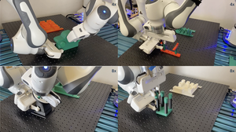
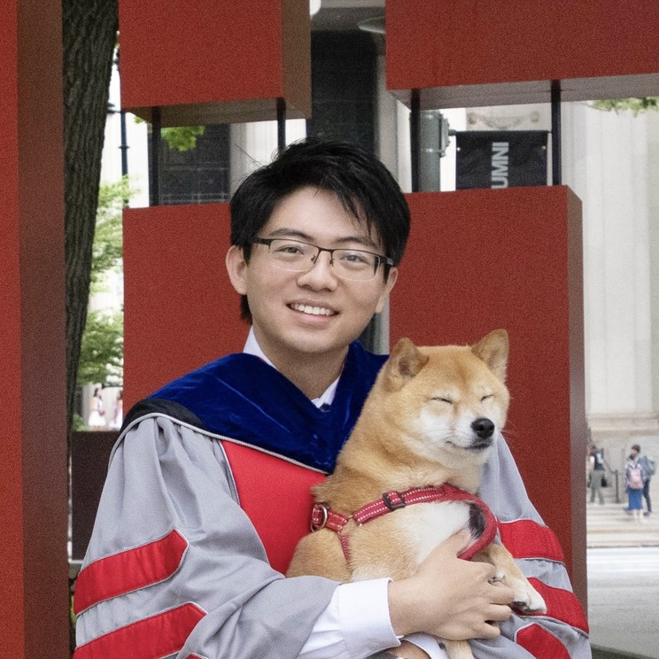
I build AI for the physical world.
I work on general-purpose, physically grounded AI at OpenAI. My research spans robot learning, tactile sensing, and manipulation.
I earned my PhD at MIT CSAIL, advised by Edward Adelson, and collaborated with Russ Tedrake and Kaiming He.
Background Experience & education
- 2025–present
- OpenAIRobotics research. Previously, a brief stint at 1X building AI for humanoids.
- 2022–2025
- MIT CSAIL · PhDContact-aware manipulation and robot learning with Edward Adelson.
- Summer 2024
- Toyota Research InstituteResearch intern, Large Behavior Models. Multimodal sensing and learning.
- 2021–2022
- NuroPlanning and prediction for autonomous vehicles.
- 2018–2020
- Carnegie Mellon · MS in RoboticsRobot learning and manipulation with Oliver Kroemer.
- 2017–2018
- UC Berkeley · Undergraduate researchExoskeleton design and optimization with Ruzena Bajcsy at the HART Lab.
News
Fabrica won the Best Paper Award at CoRL 2025.
PolyTouch won ICRA 2025’s Best Paper Award in Field and Service Robotics.
Defended my PhD at MIT and joined 1X to build AI for humanoids.
HPT was accepted as a NeurIPS 2024 Spotlight.
Transferable Tactile Transformers (T3) was accepted to CoRL 2024.
Completed my internship with Toyota Research Institute’s Large Behavior Models team.
Published T3, a framework for tactile representation learning.
PoCo was accepted to RSS 2024. MIT News ↗
GelSight Svelte was an IROS 2023 Best Overall Paper Award finalist. MIT News ↗
Presented FingerSLAM at ICRA in London and passed my PhD qualifying exam.
Selected research
Google ScholarLearning to act, sense, and interact with the world.
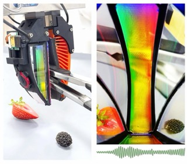
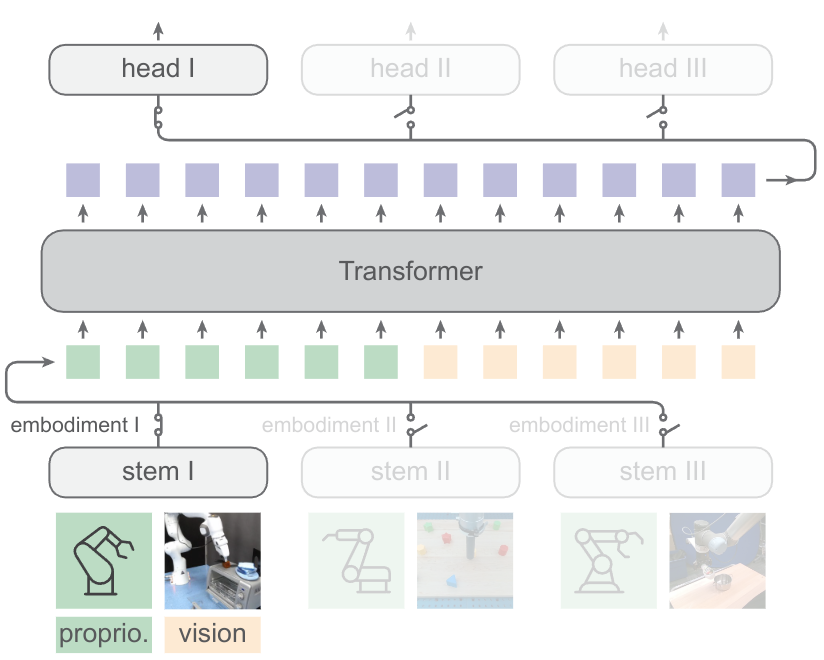
NeurIPS 2024 · Spotlight
Scaling Proprioceptive-Visual Learning with Heterogeneous Pre-trained Transformers
Learning shared representations across robots with different sensors and embodiments.
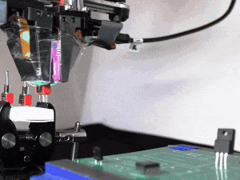
CoRL 2024
Transferable Tactile Transformers for Representation Learning Across Diverse Sensors and Tasks
Transferable tactile representations, trained on 3 million images from 13 sensors and 11 tasks.
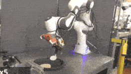
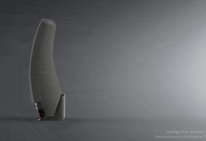
More research Earlier publications & ongoing work
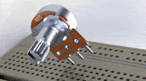
In preparation
Learning to insert electronics with submillimeter-level tolerance from tactile sensing and extrinsic contacts
Tactile feedback for electronics assembly with submillimeter tolerances.
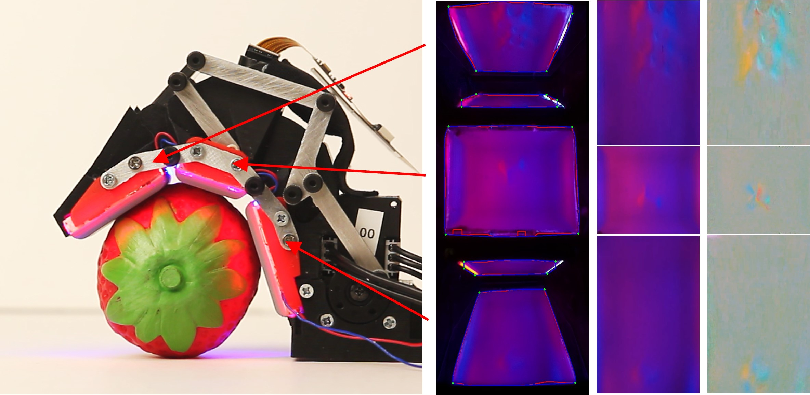
ICRA 2024
GelLink: A Compact Multi-phalanx Finger with Vision-based Tactile Sensing and Proprioception
An articulated tactile finger with a single camera for touch and proprioception.
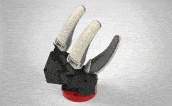
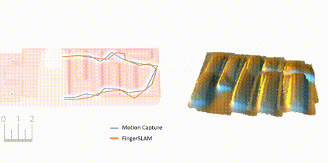
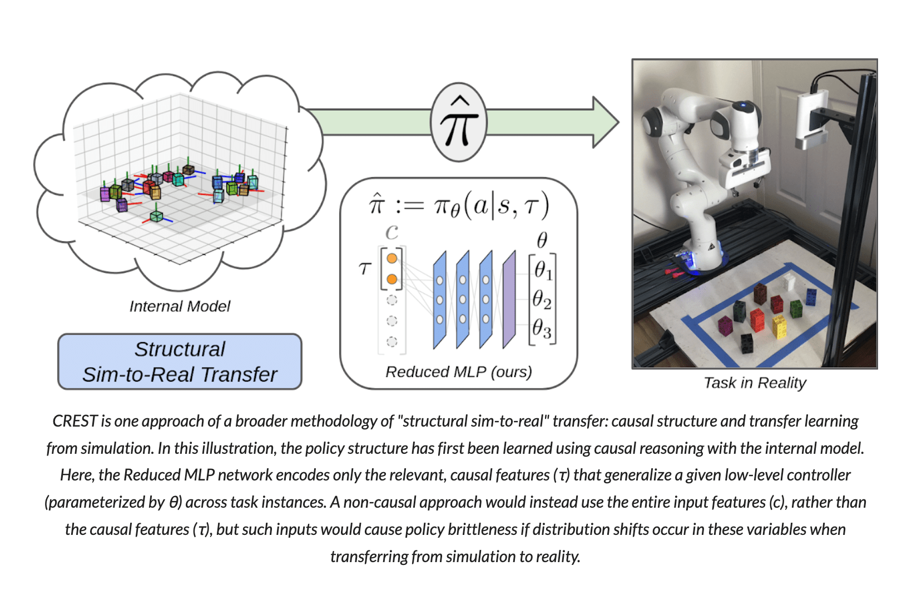
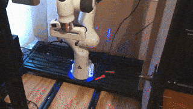
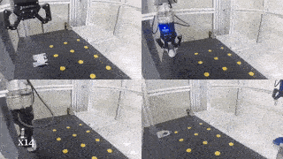
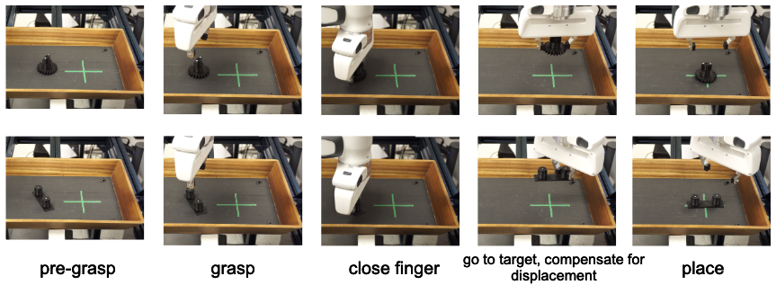
FSR 2019 · Oral
Towards Precise Robotic Grasping by Probabilistic Post-grasp Displacement Estimation
Estimating object displacement after grasping to improve precision.
Things I build
Beyond researchI also make tools for photography, astronomy, and music. I share builds on YouTube and BiliBili.
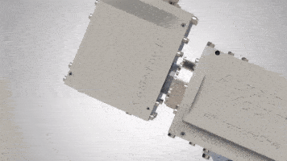
Astronomy · Open source
Alkaid Mount
A compact equatorial mount for astrophotography, built with HarmonicDrive gearboxes.
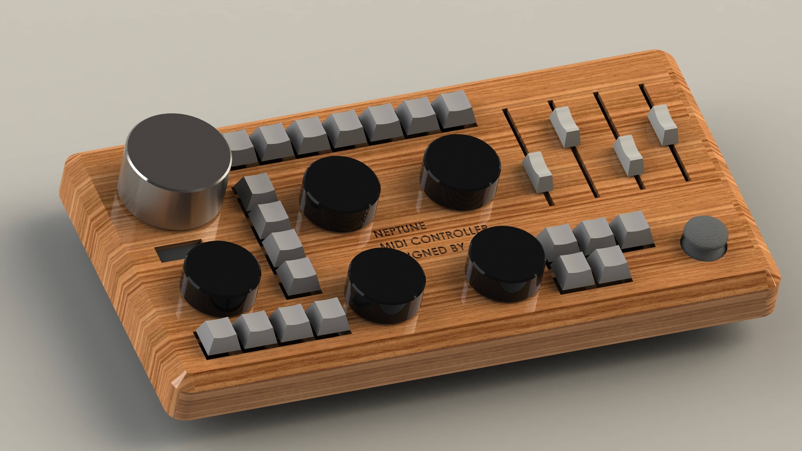
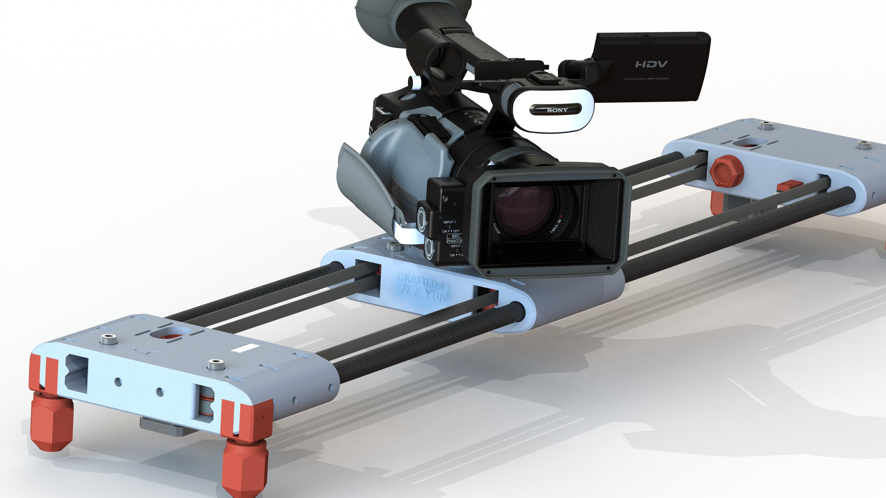
RS-Slider
A mostly 3D-printed, motorized two-axis camera slider, tested with a 15 lb cinema rig.
Work in progress
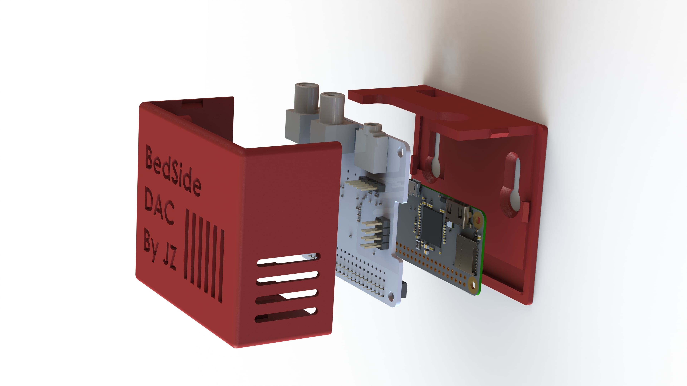
Raspberry Pi AirPlay HiFi
A compact AirPlay receiver, DAC, and amplifier built with a Pi Zero W and HiFiBerry.
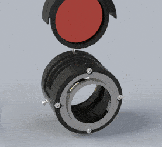
Astrophotography filter drawer
A 2-inch filter drawer connecting a telescope to a Nikon or Canon camera.
On the software side
TapDrop ↗ is my peer-to-peer file-sharing app for any platform or network. I’m also building tpvortex.org ↗.
Writing
Notes from the workshopA place for research and build notes
Robotics, AI, and lessons from making things.
Building an equatorial mount
Alkaid Mount, from design and machining to assembly.